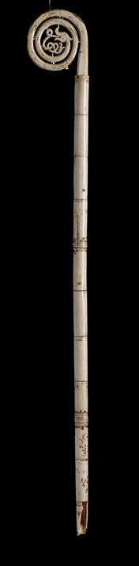
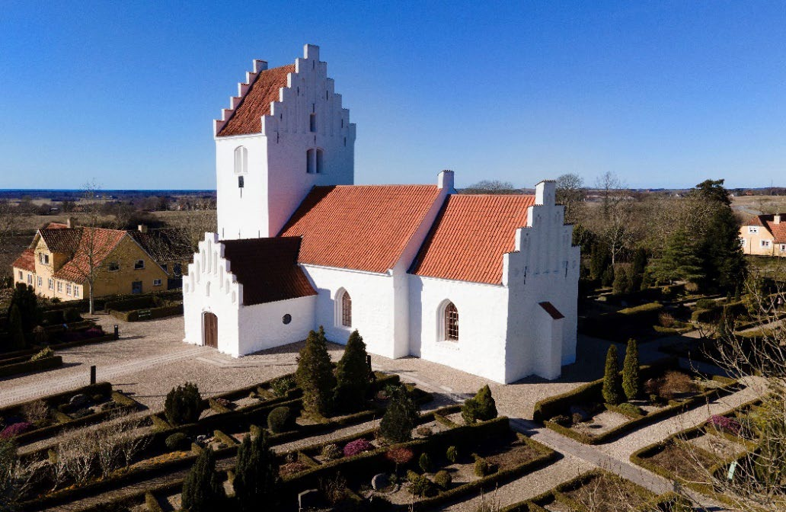
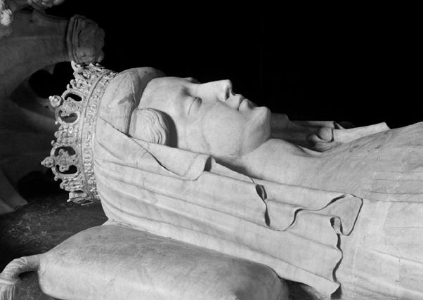

1.3 – MIDDELALDER (ca. 1050-1500)
sidde 10
I middelalderen kæmpede kongen, kirken og adelen ofte mod hinanden om magten. Kongemagt og kirke kom dog med tiden til at hænge tættere sammen. Ud over denne udvikling i styreform var middelalderen også en periode med vigtige nyskabelser som Jyske Lov og Danmarkshistoriens værste pestepidemi, Den Sorte Død. Desuden blev hele Norden samlet i én union, Kalmarunionen.
MAGTKAMP MELLEM KONGE, ADEL OG KIRKE
Efter Knud den Stores død i 1035 fulgte en ustabil periode. En række danske konger blev myrdet, og det gjorde kongemagten svagere. For eksempel blev Knud den Hellige (1080-86) dræbt i Sankt Albani Kirke i Odense i 1086 af stormænd, der var de rigeste mænd i landet. Stormændene var utilfredse med, at de skulle betale bøder til kongen, hvis de ikke deltog i militærtjeneste. Mordet på kongen gjorde det klart, at kongerne for fremtiden kun kunne regere, hvis de lavede aftaler med stormændene. Disse aftaler udvik lede sig til egentlige kontrakter om, hvordan magten skulle fordeles mellem kongen og stormændene. Disse kontrakter kaldtes håndfæstninger. Den første håndfæstning blev underskrevet i 1282 af Erik Klipping (1259-86). Den sidste af Frederik 3. i 1648. Den blev siden hen annulleret i forbindelse med indførelsen af det enevældige arvekongedømme i 1660-61.
De første mere end 100 år efter, at Harald Blåtand var blevet døbt som kristen, var kristendommen i Danmark underlagt ærkebiskoppen i Hamborg-Bremen i Tyskland, som de tyske kejsere havde stor indflydelse på. Dette svækkede den danske konge og dermed Danmarks selvstændighed. Men i løbet af 1000-tallet opstod en selvstændig dansk kirke. Den var inddelt i otte stifter, det vil sige geografiske områder, der var administreret af kirken med en biskop som øverste leder.Bispestav som biskopperne bar i middelalderen som et symbol på deres magt". Foto: Nationalmuseet.Bispestav som
biskopperne bar i middelalderen som et symbol på deres magt. Foto: Nationalmuseet.
Læremateriale Til Indfødsretsprøven

sidde 11
I 1103 fik Lund i Skåne, som indtil 1658 var en del af Danmark, sin egen ærkebiskop med hele Norden under sig. Norden blev dermed et selvstændigt kirkeligt område som en del af den katolske kirke og direkte under paven i Rom – uafhængigt af den tyske kejsers magt.
Nogle hundrede år efter, at kristendommen blev indført, havde kirken fået stor magt. Kirken blev en vigtig del af ethvert menneskes hverdag. Befolkningen skulle betale skat til kirken, som hed ”tiende”, fordi den udgjorde en tiendedel af høsten eller anden produktion. Kirken bestemte i høj grad, hvad man måtte tro på, hvordan man skulle leve og hvad der var rigtige og forkerte (syndige) gerninger. Nørre Asminderup K
Nørre Asminderup Kirke i Nordvest-Sjælland er en af Danmarks mange kirker fra middelalderen.
Centrum for troen var byens eller landsbyens kirke, og omkring 1250 var der blevet bygget op mod 3.000 kirker i Danmark. Man kom blandt andet i kirken for at bede til Gud eller få tilgivelse af præsten, hvis man i kirkens øjne havde gjort noget forkert (syndet). Tilgivelse for synd kunne ofte fås ved at betale penge til kirken (aflad). Og kirkens messe (gudstjeneste) hver søndag skabte forsoning mellem Gud og mennesker.
Der blev også bygget klostre, hvor munke og nonner kunne leve det perfekte kristne liv. Mange klostre tog sig også af de syge og de fattige. Kirken kom hurtigt til at eje store jordområder i Danmark, og den katolske kirke var en international organisation med stor indflydelse i Europa. Middelalderens danske konger måtte derfor sørge for, at kirken var på deres side.
Fra midten af 1100-tallet til midten af 1200-tallet fik kongemagten fornyet styrke. At kongemagten var stærk kan blandt andet ses i en række love, der blev lavet på denne tid, hvoraf Jyske Lov fra 1241 er den mest kendte.
Læremateriale Til Indfødsretsprøven

sidde 12
Det var nemlig nu kongen, der lavede lovene. At der kom love var vigtigt for det danske retssamfund i middelalderen. Tidligere havde slægterne hævnet sig på hinanden, hvis der var begået forbrydelser. Jyske Lov tog afstand fra denne form for blodhævn. Loven ophævede også store dele af den såkaldte sædvaneret, der byggede på uskrevne regler.
Sætningen ”Med lov skal man land bygge” stammer fra indledningen til Jyske Lov. Loven gjaldt først kun i Jylland, men store dele af den blev senere skrevet ind i Danske Lov fra 1683, den første fælles lov for hele Danmark.
Danske konger gennemførte især i 1200-tallet adskillige korstog. Det var mili tære aktioner i området omkring Østersøen for at omvende hedenske folk, det vil her sige ikke-kristne, befolkninger til kristendommen. Et af de mest kendte korstog gik i 1219 til Estland. Det fortælles, at Dannebrog under et slag ved Tallinn faldt ned fra himlen og sikrede, at danskerne vandt slaget.
PEST, GENOPBYGNING OG KALMARUNION
Fra midten af 1200-tallet var Danmark præget af splittelse og borgerkrig, som tog til i styrke i første halvdel af 1300-tallet. Det lykkedes kong Valdemar Atterdag (1340-75) at samle det danske rige igen og genopbygge den danske statsmagt. I Valdemar Atterdags regeringstid hærgede pesten, der blev kaldt Den Sorte Død. Pesten ramte Danmark og resten af Europa omkring 1350 og slog op mod halvdelen af befolkningen ihjel. Tragedien styrkede dog kongens magt. Han inddrog nemlig meget af den jord, der havde tilhørt dem, som døde af pesten.
Efter Valdemar Atterdags død i 1375 blev det hans datter, Margrete 1., der fik magten i landet. Det lykkedes også Margrete at blive regent i Norge, som dengang også omfattede Færøerne, Island og dele af Grønland. Og i 1397 samlede hun Danmark, Norge og Sverige (som dengang også omfat tede Finland) i en union med Danmark som den domine rende magt. Denne union blev kaldt Kalmarunionen, fordi unionstraktaten blev underskrevet i den svenske by, Kalmar. Kalmarunionen blev endeligt opløst i 1523, hvor Sverige rev sig løs for altid. Norge forblev i union med Danmark indtil 1814.Margrete (1.) er gravlagt i Roskilde Domkirke. Foto: Lennart Larsen, Nationalmuseet.
Margrete (1.) er gravlagt i Roskilde Domkirke. Foto: Lennart Larsen, Nationalmuseet.
Læremateriale Til Indfødsretsprøven

Fonte: Læremateriale til Indfødsretsprøven, SIRI.